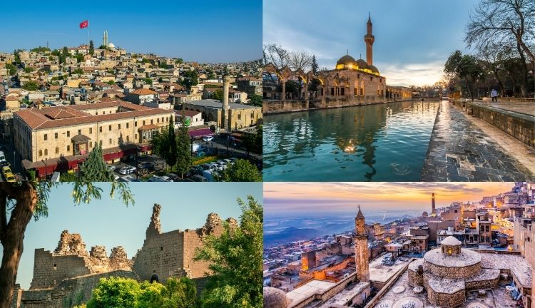

Güneydoğu Anadolu'nun kültürel ve doğal güzelliklerini keşfedin!
Güneydoğu Anadolu'nun Öne Çıkan Özellikleri
Güneydoğu Anadolu Bölgesi, zengin kültürel mirası ve eşsiz doğal güzellikleriyle tanınır. Tarihi mekanlar, lezzetli yemekler ve sıcak misafirperverliğiyle dikkat çeker.

Öne Çıkan Şehirler
Gaziantep: Lezzetli mutfağı ile ünlü.
Şanlıurfa: Göbeklitepe ve Balıklıgöl'ü keşfedin.
Mardin: Tarihi taş evleri ve dar sokaklarıyla ünlü.